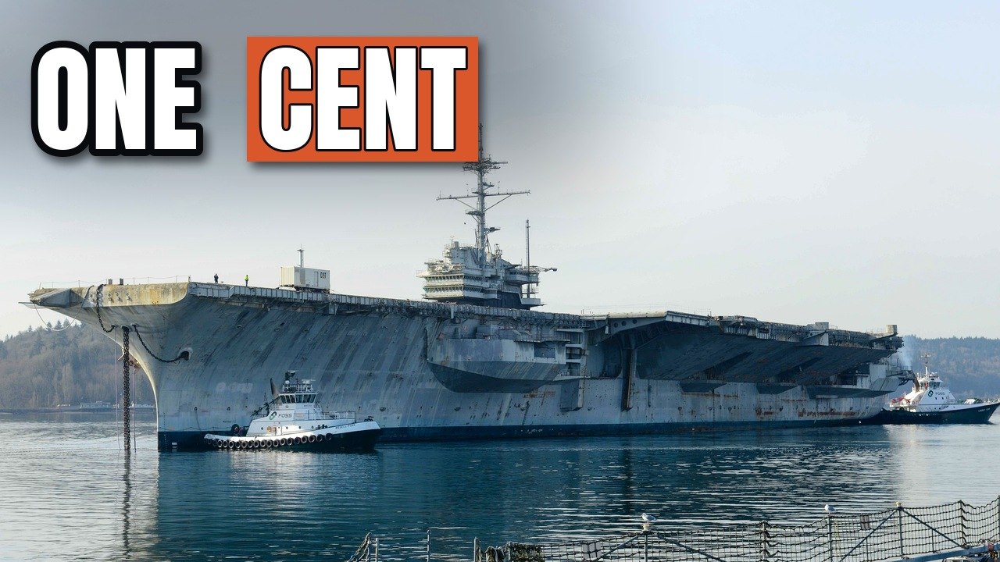
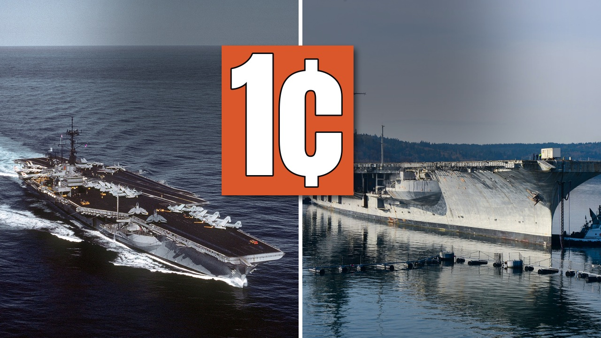
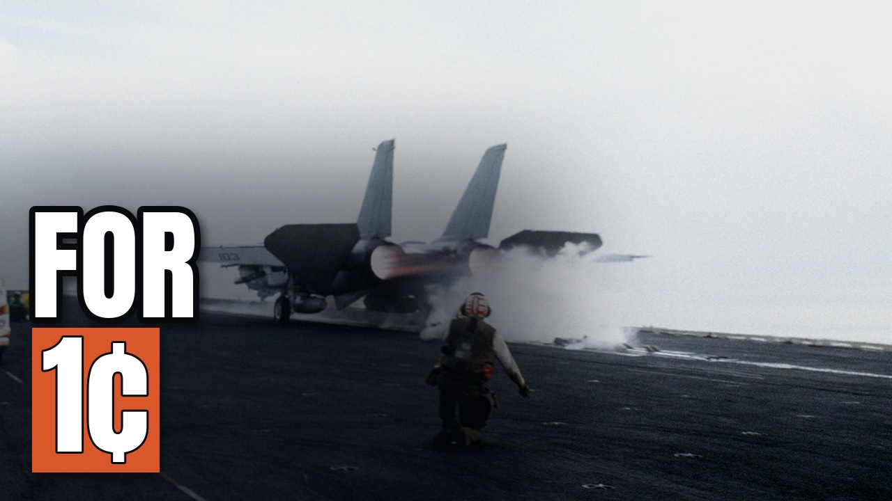

Video file: Oriskany_Nobody_Wanted_This_Aircraft_Carrier_FINAL_v8_1080p.mp4 (14:11, 1080p) · Fleet's End video #4
1. Title
Why the Navy Paid One Cent to Scrap a Top Gun Carrier
NOT yet scored in vidIQ (waits for the owner's OK on the credits). Alternates: “The Navy Got Rid of This Top Gun Carrier for One Cent” · “She Was in Top Gun. Then the Navy Let Her Go for 1¢”. Owner's working title “The Top Gun Carrier Sold for One Cent” overclaims twice (Enterprise was the main Top Gun carrier; the Navy says it was not a sale): use only if you accept that. Details: script/TITLES_THUMBS.md.
2. Thumbnails

V3, upload with this one V3_one_cent.jpg

V1, Test & Compare V1_split_1c.jpg

V2, Test & Compare V2_for_1c.jpg
Judge the Test & Compare winner on day 7–14, not day 1. Space this video ≥ 2 days from the USS Nevada upload (2–3 a week max).
3. Upload settings
Setting
Value
Altered or synthetic content
YES (AI narration; maps and graphics made for this channel)
Made for kids
No
Category
Education
Language / caption language
English / English
License
Standard YouTube License
Chapters
Automatic from the timestamps in the description
End screen
The last 18 s are an end-screen map (right half clear): add “subscribe” + one “best for viewer” video
Comments
On. Post and pin the comment in section 6 right after publishing; reply to family/veteran stories in the first 48 h
USS Ranger, USS Ranger CV-61, aircraft carrier, Top Gun carrier, Star Trek IV, Forrestal class, sold for one cent, one cent carrier, Navy scrapping, ship breaking, Brownsville, International Shipbreaking, mothball fleet, Bremerton, US Navy history, naval history, Cold War carrier, Vietnam War carrier, Desert Storm, what happened to USS Ranger
6. First comment (post it, then pin it)
Sources for this video: the Navy's own NAVSEA statement on the Ranger contract (22 Dec 2014: "This is not a sales contract, it is a procurement contract"), DVIDS and Foss Maritime on the March 2015 tow, AP on the July 2015 arrival in Brownsville, UPI on the 1 November 1983 fire, and the shipbreaker's November 2017 completion release. Ranger appeared in Top Gun, but the film's main carrier at sea was USS Enterprise. Narration is an AI voice. If you spot a mistake, tell us here and we will correct it. Did you serve on the Ranger?
7. Before you press Publish
☐
Watched the master once; names sound right (listen to voice_sample/names_ranger.mp3: Bremerton, Puget Sound, Coronado, Radford, Fairview, Corpus Christi, Crosby Leader)
☐
“Altered or synthetic content” = Yes
☐
Thumbnail V3 uploaded; V1 + V2 added in Test & Compare